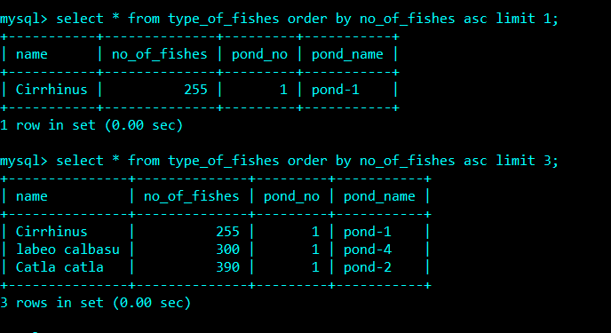

LIMIT OPERATOR :
The LIMIT in SQL is a clause that enables multi-page outcomes or SQL pagination to be easily coded and is very helpful on large tables.
A lot of records can influence success when they are returned.
If the question conditions are satisfied for numerous tuples, only a few can be seen at a time.
